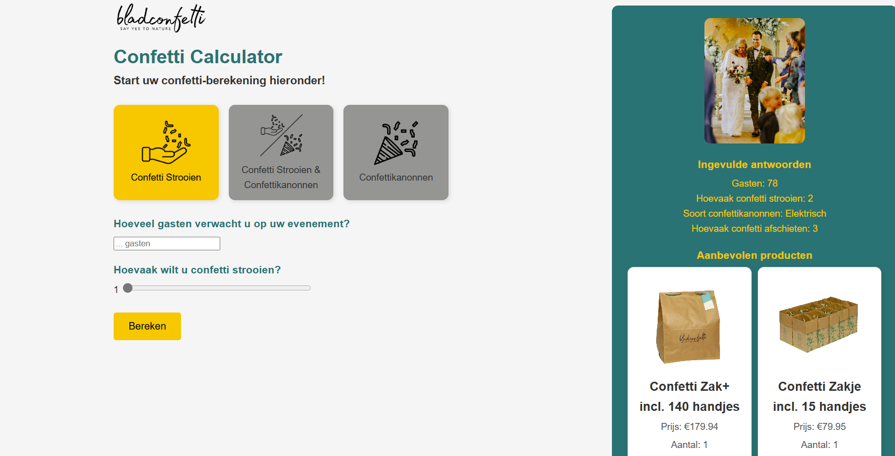

Over het project
In samenwerking met Bladconfetti, een Nederlands bedrijf dat biologisch afbreekbare confetti maakt van bladeren, heb ik een interactieve Confetti Calculator ontwikkeld. Met deze tool kunnen klanten in een paar stappen precies berekenen hoeveel confetti zij voor hun evenement nodig hebben, inclusief persoonlijke productaanbevelingen.
Mijn rol
Full-Stack Developer & UX Designer
Ik heb de volledige applicatie ontworpen en gebouwd, van concept tot implementatie. Dit omvatte gebruikersonderzoek, interface-design, frontend-development en backend-logica voor de berekeningen.
Wat heb ik gedaan?
- Gebruikersonderzoek uitgevoerd om te begrijpen welke informatie klanten nodig hebben.
- Een intuïtieve interface ontworpen die de calculator gemakkelijk maakt te gebruiken.
- Frontend gebouwd met HTML, CSS en JavaScript voor een responsieve ervaring.
- Backend-logica in Python geïmplementeerd voor nauwkeurige berekeningen.
- Productaanbevelingen geïntegreerd op basis van de invoer van de gebruiker.
Showcase

Gebruikte skills
HTML & CSS
Responsieve interface design.
JavaScript
Interactieve UI-elementen.
Python
Backend berekeningen.
UX Design
Gebruikersonderzoek en interface.
Resultaat & impact
De calculator helpt klanten efficiënt de juiste hoeveelheid confetti te kiezen, waardoor minder verspilling en betere klanttevredenheid resulteert. Dit has ook geleidt tot meer omzet voor Bladconfetti.